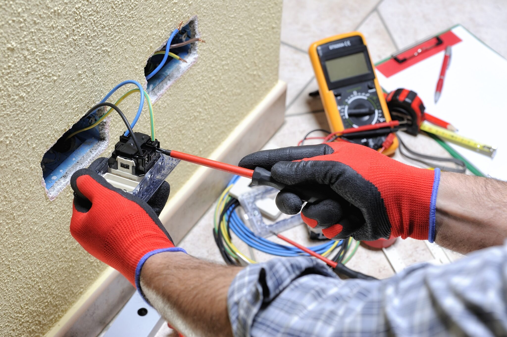

GTA Electric Company
Our Purpose

We power life today and for future generations. That means we do more than provide electricals service. It means we're listening so we can continue to better serve, better support, and better build the future, together. Day in and day out, we’re working to improve lives, build businesses and create prosperity across our diverse communities.
Who We Are
J J services, company headquartered in Toronto, powers life for 3 million customers across Toronto, Missisauge, Brampton and Markham etc. J J services is creating a cleaner, more resilient energy future for everyone with our diverse power generation portfolio, including increasingly carbon-free energy sources. With roots in the Southern Ontario region for more than a century, J J service is a recognized leader in corporate citizenship, delivering more than $100 million in economic benefits to local communities through philanthropy and advocacy efforts annually over the last several years. Our employees are dedicated to powering life today and for future generations.
What We Do
We exist to grow a world-class energy business that creates sustainable value for our four key stakeholders — our customers, employees, communities and owners. This has been our mission for many years. We understood early on that in order to create real, sustainable value, the decisions we make and the strategies we pursue must benefit all stakeholders.
EXPLORE OUR SERVICE